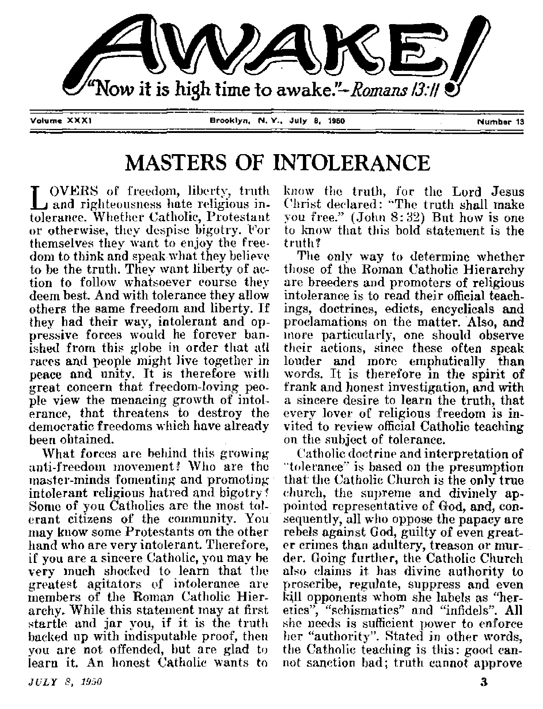
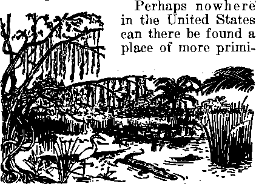

Quotations from Catholic publications disclose the Hierarchy’s views on intolerance
Deadly Dragons of the Deep
Florida’s Mysterious Everglades America’s lone tropics offer exotic wildlife in a setting of primitive splendor
THE MISSION OF THIS JOURNAL
News tfourctf that w aHe to keep you awake to the vital famun of our time* moot be unfettered by censorship and selfish Interests. “Awake!" hoa no fetters. It recognizes facts, faces facts, la tree tn publish facts; It is not bound by political ambitions or obligations; it Is unhampereJ by advertisers wnow toes must not be trodden on; it Li unprejudiced by traditional creeds. This journal keeps itself free that it may speak freely io you. But it doc# not abuse its freedom- It maintains integrity to trulli.
“Awake !** uses the regular news channels, but is not dependent on them. Its own correspondents are on all continents, in scores of nations. From the four corners of the earth their uncen sored, on'Ute'scenes reports come to you through these columns. This Journal’s viewpoint Is nut narrow* but is international, it is read in many nations, In many Languages? by persons of all ages. Through Its pages many fields of knowledge paw in review—government, commerce, religion, hiRtory, geography, science, social conditions, natural wonders— why, its cover* age la as broad u the earth and as high as the heavens,
"A wake !u pledges itself to righteous principles, to exposing hidden foes and subtle dangers, io championing freedom for all, to comforting mourners and strengthening those disheartened by the failures of a delinquent world, reflecting sure hope for the establishment of a righteous New World.
Get acquainted with “AwakeI" Keep awake by reading “AwakeI”
FluLIBHEO BUmoNHILr Bt Watchtower Bible and Tract Society, tnc.
117 Adnmu Strwt Unnklyn 1, N.Y,, (J, 3. A.
K TT. Knoih, 8 citer, geerrtanr
Five centi a copy Ona dollar a year
Irtlttnett ihnoM ht wet la dta in your <wd-uj In cnatptfoiKq with wvulitEoflf tn tiariirtn 3*Fe flellinj □< nwntf m Rental at
B^nUyn rnua tmntnn rtrr» w <4kc b kx«fad. b? intfmailMil »w cnta oatr. ButoalpO™ rata in diff«ndt tewtrfa* ,r> fart* «tiM in waJ
Hmicy.
Nftlu e n|rti» (riLb ttww«1 blut) fa aent ■t Wait tan i*n bthn — UjiJld expbv.
EuLw<d u wCXkl-tJa^ BtUcr at Brw>UFDr M.
Cfaw«t at fattu wkrn f*nt tn w dn be rloetfed eStCUit elliilD on will. Bm| piur old u rtll ■, w« uMth.
Ofkta T«»rly Sbbtfrtytinn tai*
Amrita, U. MT MmiSC., 1, »I. *1 Atftrsll. |1 kerqstro 10,, SlrUhMd, N.B.W. (fa Cm>A th Irwin kit., Pooln 6, (JnUulo *L ftftand. .11 rriiw TVr»* Loorfan, IF 2 Al >onU Ahkn, 623 BnUs Dnut, Capo Tvtn U
’.. Art <* Mirth J, ]5(». tTIlleU In U. 8. A.
o*"-4 wuni^uo}! «j*-> u»*» k*
Mastcis of Intolerance
Put Protestants to Death!
ft. C. Dnnhle Standard t/f Tdrrant’c
Frppdom of Worship for Catholics Only
Th« Sin l>£ Sins*
Super Submarines
—Deadly Dragons of Un? Deep
The Amazmig Snorkel
Revolutionary New Engines
More and Deadlier Uses
White Australia—a Religious Doxma
Vol low Gold BriiigH Yellow Race
3
4
5
7
8
9
10
11
12
13
13
The Only Salvation for All Kates
Florida's Abating and Mysterious Everglades 20
“Thy Word la Truth”
Costumca and Customs
error; right cannot tolerate wrong; and since the Catholic Church is good, true and right, she is compelled to be intolerant toward all others because they are all bad, all false and all wrong.
The merits of this doctrine will be discussed later. The point here is that this teaching is the basic reason why the Hierarchy is so insolent and bigoted, so intolerant and so implacable, so stubbornly irreconcilable and relentless in its opposition to others, so devoid of mildness or gentleness or forgiveness toward all who disagree with it. It is important to note, however, that this intolerant attitude is not necessarily held to by the majority of the Catholic population, for they are only “children of the Church”, and are no part of the official organization. In fact, the Catholic population in cosmopolitan communities are quite tolerant and only when stirred up by their hierarchical masters do they display ugly intolerance.
Put Protestants to Death!
The Catholic Encyclopedia, volume 14, page 766, says that the Catholic Church “regards dogmatic intolerance not alone as her incontestable right, but also as a sacred duty”. Moreover, it is argued by this authority that since God tolerates no strange gods, the Catholic Church “can tolerate no strange Churches beside herself”. Hence, “a strictly logical consequence of this incontestable fundamental idea is the ecclesiastical dogma that outside the Church there is no salvation.” Quoting another authority:
To this day religious intolerance finds its firmest foundation in the belief that there is no salvation outside the [Catholic] Church. . . . Here ties are more mischievous than ordinary criminals and to rid the. earth of them is a just, beneficent and necessary work.—Hastings’ Encyclopedia of Religion and Ethics, vol. IX, p, 751.
A former general of the Jesuits in a treatise on canon law expounds this same intolerant doctrine when he writes:
As concerns the relations 'of the Catholic Church with. other religious associations, there is no doubt that all religious associations of unbelievers and all Christian sects are regard-ed by the Catholic Church as entirely illegith mate and devoid of all right to existence.— Wernz, Jus Decretalium, vol. I, p. 13.
It is therefore no secret that officially the Catholic Church teaches that Protestants, called by them “heretics”, are not only .devoid of any right to exist but they should be put to death! To be explicit:
Apostasy and heresy are, as criminal rebellions against God, far more serious than high treason, murder, or adultery. But according to Hom., xiii, 1 sqq., the secular authorities have the right to punish, especially grave crimes, with death; consequently, “Heretics may be not only excommunicated, but also justly put to death." (St. Thomas. II-II, Q. xi, a. 3)—Cath. En., v. 14, p. 768.
The blood-stained historical pages of the Inquisition horribly testify that this Roman Catholic doctrine of intolerance has been both held to in theory and carried out in action. Both preached and practiced, thousands upon thousands of “heretical” Protestants were tortured and killed during that frightful ordeal of man’s history, an account of which to read is bound to rile the passions and emotions and sicken any sane person.
You protest that in most instances it was the civil authorities and not those of the Church that actually put the “heretics” to death? Quite true, but you will not deny that the civil powers were merely “swords of the Church”, and hence the Church bears full responsibility for the executions. Pope Boniface VIII set forth this fact in his bull on papal supremacy, Unam Sanclam, in 1302:
(1) Under the control of the Church are two swords . . . the spiritual and the secular. . . . (2) Both swords arc in the power of the Church; the spiritual is wielded in the Church by the hand of the clergy; the secular is to be employed for the Church by the hand of the civil authority, but under the direction of the spiritual power. (3) The one sword must be subordinate to the other . . . for the spiritual power has the right to establish and guide the secular power, and also to judge it when it does not act rightly.—Cath. En., v. 15, p. 126.
In the eyes of papal authorities those dripping civil swords must have been wielded “rightly”, for the medieval killing of Protestants was not condemned. Far from admitting any wrongful guilt, the Roman Church attempts to justify her participation in the Inquisition’s slaughter. For example:
Theologians and canonists, the highest and the saintlicst, stood by the code of their day [which decreed death for “heretics”], and sought to explain and to justify it. . . . They argued, moreover, that if the death penalty could be rightly inflicted on thieves and forgers, who rob us only of worldly goods, how much more righteously on those who cheat us out of supernatural goods—out of faith, the sacraments, the life of the soul,—Cath, En., v. 8, p. 35.
Again:
The Church’s legislation on heresy and heretics is often reproached with cruelty and intolerance. Intolerant it is. . . . But such intolerance is essential to all that is, or moves, or lives. . . . Cruelty only comes in where the punishment exceeds the requirements of the case. Opponents say: Precisely; the rigours of the Inquisition violate all humane feelings. We answer: they offend the feelings of later ages in which there is less regard for the purity of faith; but they did not antagonize the feelings of their own time, when heresy was looked on as more malignant than treason. . . . Toleration came in only when faith event out; lenient measures were resorted to only where the power to apply more severe measures was wanting.—Cath. En., v. 7, p. 262.
R. C. Double Standard of Tolerance
Down through the centuries the Roman Catholic Hierarchy has doggedly held to its teaching on intolerance, and many popes, including Pius IX and Leo XIII, have restated their exalted position of bigotry. In his “Syllabus of Errors”, Pius IX condemned the idea, that men are free to confess and embrace whatsoever belief they deem to be the truth. And Leo XIII, in his encyclical Immortals Dei, declared: “It is not lawful for the State ... to hold in equal favor different kinds of religion.”
Some honest soul may come forth with the assertion that all this belongs to the moldy past, that it is no part of this present century of enlightenment and freedom; that the Hierarchy has mellowed with age, has reformed and altered its doctrine and has grown quite tolerant. In support of such a thesis these facts are called to the witness stand: participation of Catholics in the Conference of Christians and Jews, support of Brotherhood Week, Cardinal Spellman’s blasts in the public press against bigotry as being un-American, Pope Pius XII’s Five Peace Points, plus such other matters as Catholic GI’s fighting and dying on battlefields so that the democratic principle of religious freedom might live.
These facts, however, if dispassionately cross-examined in the light of Rome’s international political policies during the past thirty years, completely fail to dissolve the Hierarchy’s guilt of intolerance. Any informed person knows that Spellman’s repeated charge that all are higots who oppose the Catholic campaign to take over the American schools is nothing more than throwing sand in the eyes of the public, lest they see the Hierarchy’s sinister plot now in progress to undermine and destroy American liberty and freedom. Calling others “bigots” js the old trick of the robber crying “Thief! Thief!” And the next time a papist hegins to cry over how many Catholic (H’s fought for America, dry his tears and sober him up by telling him how many more Catholics fought for the Axis powers against America, and that
with the blessing of the Catholic clergy in the Axis camp who prayed for their victory!
No, lie not deceived, you honest Catholics and Protestants, the Hierarchy's official doctrine has not changed. They still have a double standard of “tolerance”: one practiced when they are a majority, ruling as they did during medieval times; the other, preached when they are in a minority", fighting for power, as in America. "Tolerance;’ they define, is the '‘patient forbearance in the presence of an evil which one is unable or unwilling to prevent”. (Cath, En,, V. 14, p. 763) When in the minority, the Cathoha Church exercises “patient forbearance” of evil "heretics”, biding the time when she hopes to have sufficient power to again crush her opponents to death. She is tolerant “whenever the granting of it ensured greater advantage than disadvantage’*. (Cd(ft. Fm, v. 14, p. 772) Even as their St. Thomas, the fellow who preached that ‘heretics may be put to death’, said in another breath: nt times other religions Ton be tolerated either because of some good that results from them nr because of some evil that is avoided”.—Summa The-ologicat II-II, Q.x, a.IL
If this double-talk is ail confusing as to when the Catholic Church preaches tolerance and when, as "her incontestable right” and "sacred duly” {Cath. v. 14, p. 766), she practices intolerance, then maybe Louis Veuillot cun straighten you out. Veuillot, tagged by Pope Leo XIII as “Lay Father of the Church”, states to non-Catholics: "When you are masters, we claim perfect liberty for ourselves, in accordance with your principles, When we are masters, in accordance with our princinles, we will refuse it to you.” (Lecky, Democracy and Liberty, II, p. 25) In other words, in Protestant countries like America, the Catholic Church demands tolerance, but in countries like Franco Spain, she returns intolerance. But such double dogma is perfectly logical to those of Franco’s gang. Says Dr. Manuel Maestro, press attache of the Spanish Embassy in Washington, in writing to the New York Herald Tribune, March 8,1949: “If Catholic doctrine is inflexible and does not admit compatibility with other creeds, and if the Spanish State Tins proclaimed itself officially Catholic, our attitude.is a logical consequence of our beliefs”
The Catholic Church considers her twentieth century “tolerance" at best only & temporary device to turn present evils, such as democratic freedoms and liberties, to her advantage. “Tile presentday legislation against heresy has lost nothing of its ancient severity; but the penalties on heretics are now only of the spiritual order.” ((7a.(ft.. Ew./v. 7, p. 260) Iler canon law (legislation) has not changed and the penalties are only less severe because there is no “secular sword” to execute "heretics". She still holds to her fundamental doctrine of intolerance; she still teaches that intolerance is n natural law of self-preservation and not an evil; she still claims she has the right, if not the power, to put Pro les Ian Is Io death.—See Catholic Encyclopedia, copyrighted in this century, 1910, vol. 7, pp. 261,262; vol. 8, p, 36; vol. 14, p. 763.
Want more proof that officially the Catholic Church’s dogma of intolerance has not changed during the last fifty years? Then here it is. Rev. Father Harney of the Paulist Fathers w as asked the question: "Does the Catholic Church regard Prorestants as heretics, and does it not believe and teach that heretics should be punished, even with death if necessary!” In answer Harney said: “Certainly the Church does consider Protestants heretics. ... 1 do not doubt, if they were strong enough, that the Catholic people would hinder, even by death if necessary, the spread of such errors through the people. And I say rightly
so.”—The New York Herald, May 7,1901.
Want more proof? In their book, The State and The Church, 1922 and 1937 editions, page 38, the late Monsignor J. A. Ryan and M. F. X. Millar, S. J., say:
But constitutions can be changed, and non-Catholic sects may decline to such a point that the political proscription of them may become feasible and expedient. What protection would they then have against a Catholic State? The latter could logically tolerate only such religious activities as were confined to the members of this dissenting group. It .could not permit them to carry on general propaganda nor accord their organization certain privileges that had formerly hcen extended to all religious corporations.
Want more proof? The official publication of the Brooklyn diocese, The Tablet, Nov. 5, 1938, asserts in no uncertain language the Church’s claim to the right to kill “heretics”, when it says:
If the State has the right to punish treason with death, the prineiide is the same that concedes to the spiritual authority the power of life and death. . . . She [the Church] had and she has the right and the power to guard her interests and her life. An attack of faith is a blow at her heart. Self defense implies the right to take another’s life, when this is necessary to preserve one’s own life. . . . The power of capital punishment is acknowledged for every perfect society. Now, by the will of the Lord Jesus Christ himself, the Church is a perfect society, and as such it has the right and power to take means to safe-guard its existence.
Want more proof? In the American Ecclesiastical Review (Jan. 1946, pp. Bo-37), Francis J. Connell, C.' S. S. R., blows his war trumpet and calls on all Catholics not to yield “a single inch to the idea that a person is free to believe what he wishes”. Moreover, Connell asserts:
No one can have a real objective right to practice any but the true religion, and Catholics believe that Catholicism is the only true religion, which God commands all men to accept. Every other religion is false, and opposed to God’s plan for man’s salvation, and it is egregious error to say that anyone has the right to accept it. ... It ill behooves any Catholic of our day, particularly any Catholic priest, to compromise or to equivocate in propounding this doctrine through fear of offending those not of the Catholic faith.
Freedom of Worship for Catholics Only
Do not think Pope Pius XI I s Five Peace Points have been overlooked. Asked the question, “When Pope Pius XII in his Christmas message, 1942, referred to ‘the right to worship God’ as a fundamental right, did he mean that everyone has a true right to practice whatever religion he deems to be true ?” the official magazine for all priests thus answered:
Although the sovereign pontiff did not further qualify the significance of “religious” and “worship”, these words can refer only to the Catholic religion and worship, if the word “right” be taken in its proper objective sense.
For, if there is anything basic in Catholic teaching, it is the doctrine that the Son of God established only one religion and imposed on all men the obligation of embracing it; consequently, no other religion has a real, objective right to exist and to function. . . .
Again, a person may have a civil right to practice a false religion, and to grant such liberty may be the most feasible policy even in a Catholic country. . . . But it must be emphasized, such a civil right by no means indicates that false religions have a material right to exist, or that their members have a natural right to practice them.—-American Ecclesiastical Review, Feb 1944, p. 142.
Let this once and for all settle any misunderstanding that the Roman Catholic Hierarchy is in favor of religious freedom for any outside its owm cult! Cardinal Spellman’s article in the American Magazine on bigotry was only dust for Protestant eyes, for at the same time for Catholic consumption, The Rosary, published by the Dominican Fathers, avowed that the warning against tolerance toward rrorestants would continue to be sounded "till the iasi heretic is lying cold in his grave’1.
If there yet remains one doubter, if yet one more proof will convince the most skeptical that the Roman Catholic Hierarchy is intransigent in its fanatical intolerance, then let the official Jesuit organ, published in Rome, speak: _
The Roman Catholic Church, convinced, through its divine prerogatives of being the only true church, must demand the right to freedom for herself alone. ... As to other religions, the Church will certainly never draw the sword [for it is a civil sword sheathed in the power of the state], hut she will require that by legitimate means they shall not be allowed to propagate false doctrine. Consequently, in a state where the majority of the people are Catholic, the Church will require that legal existence be denied to error [meaning nonCatholic beliefs], and that if religious minorities actually exist, they shall have only a de facto existence, without opportunity to spread their beliefs. . . .
In some countries [like America], Catholics will be obliged to ask full religious freedom for all, resigned at being forced to cohabitate where they aloue should rightfully be allowed to live. But in doing this the Church does not renounce her thesis . . . hut merely adapts herself.—La Civilta Cattolica, April, 1948.
As stated at the outset of this review, the whole structure of Catholic intolerance has been built upon the theory that Roman Catholicism is of divine origin, but any reputable Bible scholar knows that the "primacy” and "supremacy" doctrines of this organization have absolutely no Scriptural foundation. Rather, these theories and doctrines are solely based on worthless traditions, opinions and teachings of mortal men. . Any serious student of history also knows that the Roman Catholic Church is not of apostolic origin. Instead of being set up and established by Jesus or the apostles, it was brought to birth 300 years after Christ when Constantine the Great took a degenerate, apostate and adulterous so-called “Christian” organization, bred it with the paganism of his day, and produced an illegitimate offspring that was later erowmed as a queenly state religion with palace and headquarters, not in heaven, but behind the earthly walls of Vatican City, no less, upon the very site and foundation of a pagan temple! Manifestly, then, this organization has absolutely no grounds for claiming she is the true church, the only church with’ a right to exist. There is therefore no basis for her intolerance.
Freedom-loving Catholics and Protestants, as well as nonchurchmembers, throw off these shackles of intolerance and bigotry! You do not want civil dictators to imprison you. Then do not allow ecclesiastical masters to bind you mentally with the Dark Age chains of intolerance. Freedom and , liberty of thought, opinion and action are to he exercised. Take full advantage and make full use of them. Follow the apostle Paul’s advice: “Prove all things; hold fast that which is good,” (1 Thessalonians 5:21, Douay') The truth thus obtained will make you free of all ignorance, superstition and fear-—the three ingredients of intolerance.
&he Sin of Sms?
Time magazine tells of n game that Italian children now play, called “To Rome in Holy Year”, It is the product of a Jesuit priest, and is played by spinning a wheel to determine the number of squares (50 in all) that the player may advance en route to the Vatican. If he lands on certain squares he is penalized by having to go back n number of squares and losing a turn. The worst penalty is attached to square 49, which sends the player all the way back to 5, which is marked “Religious Instruction”. Why such a heavy penalty! Why, square 49 is labeled with the horrible word, “Protestante.”
SUPER SUBMARINES Deadly Dragons of the Deep
MODERN-DAY monsters that lurk beneath the surface of the sea lie in wait for their prey with a venom more deadly than any fictitious sea serpent's, a death-dealing power greater than all the fire-breathing story-book'dragons ever concocted, and with a fierceness that puts to shame the feeble imaginations of all the superstitious storytellers who have ever lived.
These sea monsters were bom without fanfare. In their infancy they seemed to be merely man's attempt to mimic the fish, who swim beneath the surface of the sea, and many doubted their ability to survive. At one time they were propelled by foot pedals, at another time some of them had wheels with wThich to roll along the ocean floor.
But when they began to grow they struck fear into their makers, until in World War II they were monstrous death-dealing serpents of the sea. Their size? Length. 310 feet. Displacement, 1,700 tons. Their power? Four large Diesel engines producing the total of 6,400 horsepower. Their sting? They destroyed countless human lives, and sank 20,000,000 tons of shipping in that war!
This man-made monster, the submarine, had one disadvantage. One thing hindered him. He could hold his breath while under the water, but he could not breathe there. Usually he came to the surface at night to breathe, for actually he was a surface craft, a boat that had been designed to go under the water when he was afraid or when he wanted to strike an enemy.
But this monster was a machine, not a living thing, and therefore did not come under God's law that all living things must produce only their own kind, and the monster's descendants have evolved. They now have a new kind of nostril, made by man's hands, that enables them to breathe under water, so now they can go all the way across the ocean without coming up for air. Where formerly they could stay under water for only a few hours, they now can stay down for weeks at a time.
The New York Times reported that one of them stayed, under water for 30 days. Science News Letter said that one was down 70 days. In September 1949 a French submarine traveled 2,000 miles in 17 days without coming to the surface, and jn April 1950 a United States submarine remained submerged on the entire 21-day trip from Hong Kong to Hawaii, 5,200 miles! These and other astounding reports show that modern submarines are not limited to the few hours that they can hold their breath under water, but that they can remain nnder water indefinitely, although still getting th err air from the surface. There is now no need for them to come up except for food, fuel, or more weapons of destruction.
SIMPLE ILLUSTRATION OF THE PRINCIPLE OF THE SNORKEL
When intake is submerged valve closes
When intake is above water air enters
Exhaust may be under water all the time
The new nostril that has been developed for the submarine is simply a means of providing air at cruising depth, and is a modern adaptation of a principle used by ancient savages who breathed through hollow reeds while hiding in swamps. It is culled q ‘‘snorkel*’ in Amer-ioa, *WinorkeIw in Germany, and “snort"" in Britain. It consists of two Lubes that extend from the conning-tower of the submarine to the surface. The longer of the two tubes sticks a hint or two out of the water and has an air intake about the size of a watermelon, through which it draws the fnwh air that sustains life inside the submarine and opera Ik* the huge Diesel engines. When a wave washes over it the snorkel’s intake valve automatically closes so that waler will not be taken in. The shorter tube is for exhaust and does not have to be above the water. A submarine, while breathing through a snorkel, can cruise as much as 50 or GO feet below the surface of the sea for days or even for weeks. It can operate its Diesel engines to proftel the boat, or use them to charge the batteries, bo that Ihc snorkel can be drawn in and the submarine powered by electricity, with no connection with the surface wbaI soever. When the batteries need recharging the snorkel can be raised while air is drawn Id to operate the engines as they generate the electricity, and then it can be pulled down again.
The military advantage of the snorkel-equipped submarine over the older type that had to come to the surface and rely on the cover of darkness to protect it from the eneruv while the batteries were recharged is obvious. With the development of radar, ships and planes could see through the darkness, hence the protective covering no longer existed. With the snorkel only the periscope and the snorkel appear above the surface, and on a radar screen they appear as only a tiny point of light, hard to see and easier to lose. Anti-radar coatings that can be used for the snorkel and periscope make detection even more difficult by reducing the reflection of radar waves. If it is observed, the snorkel can lie hauled m and the submarine can proceed entirely under water, using its batteries for power. Radar can be bounced off the moon, but it won’t show a submarine that is a few feet under water.
The Dutch produced the snorkel about 1938. The Allies rejected it during the war, as they felt that it was not worth the time that would be required to change over their factories. The Nazis seized it from Holland and immediately set about producing it, and it appeared <>n German siibnmriijrs in 1944.
The snorkel changed the entire complexion of submarine warfare, and it is believed that if the Germans had gotten it and their other submarine developments into use in the Atlantic in time the entire European war would have lasted many more months.
When the European war ended, England, America and Russia got some of these German submarines. American authorities, whose siibiiiarinea could do eight to eleven knots under water, were surprised to learn that the Germans were almost ready to produce a submarine that could have traveled faster under water than United States" subchasers and destroyers could have pursued it on the surface.
A snorkel converts a submarine into a craft that can stay under water indefinitely, hut does not. mid to its upend. To double the speed of these underwater monsters requires drastic changes, hut a project to do this was instituted in the United States under the code name “Guppy1', which may refer to the first letters of “Greater Underwater Propub sion Power’, with h. “Y” added Ln the end, or possihly it comes from the name of an innocent little fish, the “guppy"’, that may Ite swimming around in your living-room
aquarium. Under this project the submarine and its conning-tower have been streamlined, and the guns have been taken off the deck (it is the first naval craft in American history that has no guns). Outside it is described as being "sleek as a wet seal”, and inside its battery capacity has been increased. This effort has approximately doubled the submarine's speed, and it has been suggested that it may almost double again within the next ten years. Such advancements will make World War II sounding equipment obsolete, for it is of little value in locating submarines at more than 18 knots.
But the snorkel and streamlining are not the only new advances of these undersea raiders. Work is under way to build ships that can navigate under water without any contact with the surface, even without getting air through a snorkel. The German Kreislauf engine provides one means of doing this. It is a Diesel engine that uses its own exhaust, supplemented by injections of pure oxygen from oxygen tanks.
Another type of engine, partially developed in Germany before the conclusion of the war, is-the revolutionary new Walter hydrogen-peroxide engine. Hydrogen peroxide contains twice as much oxygen as water does, and in this engine it is broken down into free oxygen and water. These are fed into the combustion chamber along with fuel oil. The steam pressure from the combustion chamber is directed into turbines that drive the propellers. The power output in relation to the weight and size of the engine is reported to be enormous, and the oxygen does not have to come through a snorkel, as it is a part of the hydrogen peroxide and is stored in the ship itself. It is claimed that with such an engine in a U-boat in 1944 the Germans achieved a speed of 24 knots, and that is faster than the best of America’s streamlined "Guppies” can travel today. Difficulties have been encountered in producing power with this engine, the greatest being the cost, which was almost prohibitive; but it is reported that the Russians launched a submarine with a Walter engine in 1948, and American submarines are being built so that this new type of engine can be installed without great difficulty, if it proves practical.
A discussion of power for underwater boats brings up the question of atomic propulsion. Two years ago the Saturday Evening Post (July 24, 1948) said, "Somewhere over the horizon lies the prospect of atomic-powered submarines. This may be years away, but it is a possibility and cannot be ignored.” In May 1949 a representative of General Electric said that his company had been working for more than three years on problems connected with driving navy ships with such power, but that use of it for ships was far distant. But such work continues. There is no reason to believe that atomic-powered submarines are just around the proverbial corner, hut two companies in the United States (General Electric and Westinghouse) are now working on dif-ferent^ atomic engine studies under the direction of the Atomic Energy Commission, and engineering work on one of them is said to be far advanced, with the possibility of the construction of a model engine late this year. The New York Times of April 26 carried the following news from Washington, D.C.:
Admiral Forrest P, Sherman, chief of naval operations, asked Congress today for authority to build a submarine propelled by atomic energy, to be ready in 1952. He made the request to the House Armed Services Committee at a public hearing. . . . Other ships sought by the admiral included a guided-missile cruiser, a 250-ton submarine, on which no details were disclosed, and a submarine with a closed-cycle power plant—an underwater vessel requiring no external source of oxygen.
If atomic power is made available for submarines it will mean that the problem of fuel and oxygen for the engines will probably be a thing of the past. Then aubmarince may remain onder water as long as supplies of oxygen and food for the crew last,
Development of these new sea monsters is paralleled by the discovery of deadlier uses for thpin. Experiments have been made using them ns underwater troop ships, as one-man attack submarines, for mine-laying in enemy' waters, as sea-going rocket platforms, to provide n radar picket line ior protection against enemy amrnfl. and cargo carriers or undersea tankers to supply other boats. Authorities have predicted that major underseas engagements of the future may he fought het ween submarine?, and that ihr submarine wili he-rfirirn the primary instrument of attack in wars of the future.
The primary weapon of present submarines is the torpedo. In the last war torpedoes were launched 1,500 yards. Now they can travel 10,()H0ya.rd>. w el I out of range of detection equipment. There are various types of torpedoes. Womc arc aimed directly at the enemy ship, others aeek gut and destroy their target by following its sound and need not lx? aimed directly at it, while a third kind weaves back and forth in a predetermined pattern. When shot into a convoy it depends on its zig-zag coverage of a wide urea to find a target.
The submarine race.today closely parallels the atomic bomb race. The United States believes that it is outnumbered three to one on submarines in the Pacific. Russia is known to have obtained German snorkel-equipped submarines at the end of the second world war, and numerous German submarine experts have not oeen neard from since the Iron Curtain clamped down. It is not known what contri hut ions they have made to Russian submarines. It is understood that Russia has over 270 submarines in active service, while the United States has only 70, with 100 more in reserve. Admiral Sherman said that the Russian submarine Meet "i? more dangerous than the entire Japanese fleet was to United States seen ri I y at the start of World War 11
Defense against these new submarines poses great difficulties. Sounding devices formerly used, and even radar, prolmhly will be of little value in locating them. Grnve concern has been expressed by naval leaders over the state of submarine defenses. Anti-submarine submarines, fully equipped to do battle with other submarines on or beneath the surface, an* reportedly under nmx1rucl.ii>ji. Other devices to locate and attack these aggressors that dwell in the son arc said to be '’right out of Buck Rogers*’.
The old world's armament race continues. with atomic bombs, with submarines. and with other terrifying weapons of destruction. Nations ciirilhme i.o beat their "plowshares into swords”, and to arm to the teeth for war on the ground, in Ilie air, on tin* sea, and now under the sea's surface. But such preparations for global war arc a parf of the signs that Christ gave to Ills disciples, indicating that soon the right eons new earth will be established under the direction of Jehovah God through 1 lis' Won Christ Jesus. Shortly the divinely inspired prophecy recorded by Isaiah foretelling the reversal of this armament race will be ful filled, namely; “They shall beat their swords into plowshares, and their spears into pruninglwoks: nation shall not lift UP sword against nation, neither shall they learn war any more/’—Isaiah 2:4.
The Communist Control Law
Will it control communists?
Will it affect traditional American freedom?
57 senators either disagreed with his reasons or feared the political repercussions of voting against anticommunist legislation, for they overwhelmingly overrode Truman's veto, and the bill became law.
A Brief Look at This Law will show us what it is all about. It is made up of two parts, the Subversive Activities Control and the Emergency Detention Act. It totals 50 pages, more than 25,000 words, and
HOW to approach the threat of communism has been a political hot potato in many lands* It was a main issue in a 1949 Australian election campaign. Panama outlawed the party April 29, 1950. The same year Canada’s House of Commons decided on May 2 that the situation was well in hand there without having to outlaw communism. England’s Conservatives pledged* to “employ every legitimate means to combat the insidious advance of communism", but opposed outlawing the party. Anticommunist legislation was tossed around in the United States for many months, until, at last, several bills were thrown together into an all-inclusive communist control law, the Internal Security Act ot 1950 (also called the XTMcCarran law” and “H.R. 9490”), which was rushed through the 81st Congress just before election time. It was an extremely controversial act. Those in favor said it is needed to ferret out and stop communists, while those opposed called it a “blunderbuss” that would damage all civil liberties, but not really cripple communists. Truman vetoed it via 5,500 words to Congress,
He contended that it would actually help the communists, said It was too hroaA and dangerous, yet 286 representatives and contains many different legislative proposals with just one thing in common: they are all supposed to be anticommunist. The law prohibits conspiracy to “contribute to the establishment within the '’Gnited ‘States bi a tolaTitafian dictatorship”, It forbids communists to hold any nonelective employment under the United States government, and forbids members of communist action organizations from engaging “in any employment in any defense facility”. It authorizes the publication of a list of “defense facilities” (war plants, laboratories, railroads, etc.) and orders each such facility to post a notice advising employees and applicants that it comes under this, section of tha law..
It denies passports to communists and requires communist organizations to register with the attorney general and report the names of their officers, the money received and spent, and in some instances to give the name and address of each member. It requires members of such organizations to register individually, if the organization has failed to register.
It bars organizations registered as communist from sending publications by mail unless the envelopes or wrappers are
13
present-day hardness. It was a gradual process. “This religion of a White Australia is no sudden burst of racial hate or fear of invasion: it is a slow-moving, cver-inereusing political philosophy that has now reached to the very roots of Australia's soul/' (Hunt's The Risintj Tent* per of the East} Advocates of the policy maintained that cheap labor would jeopardize the economic security of the white man and that a heavy proportion of colored population would destroy his social standards.
Soon after federation on January I, 1901, the Commonwealth l>cgnn to unify the immigration laws of the several states, on the principle that non-Euro-peans were to I** excluded* This was a moat delicate matter. An immigration act specifically1' excluding Asiatics naturally would offend the Indian find Japanese governments. Hence, Britain would not tolerate any affront to these friendly rial ions. As a consequence, a plan, a cunning artifice already tried in Natal, South Africa^ was adopted. Il provided that any' person who, on being asked to do so, failed to write out on dotation, and in the presence of an immigration officer, a passage of fifty words in any prescribed language was prohibited from entering the country. This test is probably the world's hardest exauii-jiation, as nobody has ever passed it. Now and again someone with a knowledge of languages has put up a light, hid the Tm-ir ignition Department always wins in the end, for if an unwanted migrant passes the test in one language they try him with another. It is simply’ a color bar.
During World War II, when the Japanese swept over the islands to the north of Australia, fifteen thousand refugees of various races and colors were given temporary sanctuary here. There were also colored servicemen who, during their visits to Australia in the war years, had married Aust ralian girls, and planned to return and sei tie down after the war. But when the shouting and tumult of war had died down the government began a program to get rid of all such Asiatics. Most went readily, with the government paying their fares. It fell to the lot of the minister for immigration, Mr, A. A. Calwell, to do the dirty work of removing the remainder. Throughout the East reaction to the uprooting of those who had settle*! down here was one of bitter resentment.
One deportation case that aroused public opinion was that of Mrs. Annie O'Keefe, a full-blooded Indonesian woman with eight children, who came to Australia as a refugee in 1942. In 1944 her Ambonese husband was killed in an air crash, and in 1947 she married an Australian named O’Keefe, In January 1949 the minister for immigration informed Mr3. O’Keefe that sho had only one month in which to leave the country. The big newspapers, glad of any opportunity to crack the Labor government, whipped up a wave of sympathy for the family. Public opinion was running hot when the minister, Mr, Calwell, made a speech in Parliament about the case. Among other things he said: “You can have a White Australia or a Black Australia, hut a mongrel Australia is impossible. I am not going to take the firpt step? to establish precedents which will open the Hood gates.”
A storm of protest from Dntch and Asian authorities greeted Ills comment. Along with public sympathy for the O'Keefes came money to contest the validity of the government’s order in the Jljgh Court of Australia. The question was whether or not Airs. O’Keefe was now, by marriage, an Australian citizen. On March 18 the court, in h fourdo-two decision, said "’Yea-”. Licking his wounds, the minister talked of “a complete overhaul and consolidation of the Act”,
Another case, with international eom-plii'ations, was that of Sergeant Lorenzo Gamboa, a Filipino. He first came to
Australia as a stretcher case, from Bataan, in 1942. In 1943 he married an Australian girl, and in 1946 he was discharged from the American army in Brisbane, Queensland. Later he was told that he would have to leave Australia because he was not an American citizen. He went to America, re-enlisted and took out papers for citizenship. Thus armed he applied to the Australian authorities to join his wife and child in Australia, but he was refused permission for even a temporary visit. Gamboa appealed to General MacArthur for help and got it, but the Commonwealth rejected even the general’s appeals. Lorenzo Gamboa was good to fight for Australia but not to live there. His skin was brown I
But does the average Australian approve of an unrelenting White Australia policy? A survey of opinions in Sydney in 1947 showed 58 percent in favor of admitting a small annual quota of Indians and Chinese, while 39 percent were opposed and 3 percent were doubtful. Nevertheless, talk of modifying the policy meets with sharp hostility. Mr. Spooner, a member of Parliament, suggested at a church forum on July 8,1945, that Australia should admit Asians on a quota system, like that used in the United States. When Mr. Spooner’s comments were mentioned in Parliament, the vicepresident of the Executive Council asked him, “Would Mr. Spooner throw a spoonful of tea into a boiling hilly and still expect to have plain hot water? Once there is any compromise on the White Australia policy, the whole policy is lost.” Or. as Professor Elkin says, in his book A White Australia: “That suggested modification of the policy should he labelled heresy is in keeping with its status as a national dogma.” And again he writes, “So it has become an article of faith, necessary to national salvation—a dogma.”
The Only Salvation for All Races
The nations of the East are stirring from their long sleep. Once contented to JULY s, 1950
be the work horses for the Western world, they are now asserting themselves, and remembering that they, too, are humana. With their assumption of independence they feel the strength of growing power. No longer does the white man overawe them. For example, China’s influential Ta Kung Pao, in a leading article, reminds Australia of an elementary truth she has probably forgotten: “Mr. Cal well should remember that 200 years ago Australia did not belong to the white people.” Or, as the Manila Chronicle solemnly warns: “If such things as this go on [the driving out of 18 Malayans who bad married Australian women], World War III may he a war of the races.” It is therefore obvious that from now on Asiatics will be less likely to take the insult implied in the White Australia policy—that they are just not good enough to live and work side by side with the white man.
Fot Australia it is indeed a "knotty problem. To maintain the policy rigidly is to incur the increasing hostility of more than half the world’s population. On the other hand, politicians of all parties say that any modification of the policy would be the thin end of a wedge that would eventually overthrow the white man in Australia. Most religious organizations favor modification and a quota system. But their patronage is not the genuine Christianity of the Bible. Paul said: “God . . . hath made of one . blood all nations of men for to dwell on all the face of the earth.” (Acts 17:24, 26) The clergy do not believe that the colored man is their equal. Their outlook is just as national on this question as it is on taking sides in war.
Soon, however, God’s glorious kingdom administered by Christ will transform this earth into a paradise and restore man to perfection. Our generation will see it. Then gone forever will be the horrible racial harriers that have divided men into fancied categories. There will be no need for any segregation and diserimina-
they have ever been members of any ' ‘other totalitarian party”.
Opera singers, musicians, doctors, businessmen and plain citizens arriving In New York Were hustled off to Ellis Island when they had to admit that they had been members of the Hitler Youth or joined Fascist labor organizations or other totalitarian parties. Hundreds were held. Finally in sheer self-defense, the Justice Department ordered all visas suspended. The London News Chronicle (October 13) commented, “The government fin Washington] has suddenly taken the extraordinary step of halting in their tracks thousands of people all over the world who are preparing to travel to the United States.”
Italy was outraged, Western Germany was hurt. The Italian ambassador said that application of the act to Italian ships violated the United States-Italian treaty of friendship and commerce. Officials estimated that the law would exclude 90 per cent of all Germans and more than half of all Italians.
Ironically, Senator McCarran, who sponsored the new immigration rules, was a particular friend of Spain's dictator Franco, whose Falangists were excluded under the act’s language; which would also apply to Latin-American “Good Neighbors” who lived under strongs man machines in the past, or at present.
The law’s supporters protested that the administration was overdoing its application to discredit the law, but the Justice Department insisted that its wording allowed no alternative.
Then on October 31 the alien ban was modified somewhat by Attorney General J. Howard McGrath, who announced that aliens who had been Nazis and Fascists in name only, or who joined to get education, food or employment, or before reaching 16, would be permitted temporary entry into the United States. But the section regarding aliens traveling to the United States is only one part of the law.
to make the communists register and identify themselves is yet to be enforced. Obviously no action can be taken against them unless the government knows who they are anyway. The law may provide a means of jailing known communists for their refusal to register, and thereby get them out of circulation, but there is little reason to think that fear of $10,000 fine and five years in prison would drive out into the oper\ any unknown persons who would actually engage in espionage or sabotage, because the risks in their business are far greater than the penalty for flouting the Internal Security Act.
The attorney general, who lias the responsibility of enforcing the law, publicly stated (September 20) that he believes “we appear to be going through a period of public hysteria”, that if potential saboteurs can be kept out of defense plants and individual troublemakers out of vital places, as during World War II, “we can afford to ignore the soapbox oratory/’ for, he said, communism as a political doctrine has never been successful with an overwhelming majority of the American people, as evidenced in that the communists have won virtually no vital offices.
But whatever the merits or faults of this law, it again calls our attention to the utter hopelessness of man’s plight on earth today. How the meek of the earth will rejoice when the justly vengeful hand of Jehovah God soon wipes communism and all man’s failing schemes from the face of the earth! Then under the blessings of Jehovah’s kingdom all creation will sing praises to him and man will lift up his voice in thanksgiving that peace has at last come to the earth, peace never to be shattered by any kind of totalitarianism, and peace that will never end!—Isaiah 9:7.
AND
ty "AwoW" cocraipwidtni in Germany
TIE fronts of battle for world domination are distinguishing themselves. In the cold war between East and West we observe how both opponents are continually changing their colors like a chameleon. Everybody is talking about democracy, but totalitarian ^actiyities are iji full sway everywhere. The impartial spectator of tills world drama sees the powerful monopoly of capitalism, closely connected with the Vatican on one side, and on the other the mighty Cominform with its propaganda and obvious hostility against the Western world. One of the most surprising events is the attitude the Kremlin takes toward religion, particularly toward the Orthodox Church and its new appearance on the world stage.
The question for many observers of Russia is: Have the Orthodox Church of Russia and churches of all countries un7 der Russian control become a tool of communism? Strange as it may seem, the fact is undeniable that the Kremlin with its dictator has allied itself with the Russian church, which was entirely banished up to the outbreak of the second world war. This church is now used as a buffer state against the worst enemy in the tight for world domination, the Vatican,
The so-called “church” of old “holy” Russia taught that the apostle Andrew founded her. This legend, however, finds no support in the Bible; it is only an invention of tradition. Quite early in the history of the “Christian” era the conflict between East and West began, which ended in a schism between the two: Rome and her bishop striving for superiority, opposed by the old patriarchates of Constantinople, Alexandria, Antioch and Jerusalem, Conflicts about doctrines and formalism caused a gap-that reaches into our time. Later on the former “Christian” countries, dominated by the Eastern church, experienced the invasion of Islamism, that advanced up to the border countries of the Roman church, so that the “Christian religion” was to a great extent abolished by Mohammedanism. By and by a religious boundary formed itself that split the Slavonian nations. Whereas Serbians, Bulgarians, White Ruthenians, the Ukrainians and Russians linked with the Greek Orthodox religion, Slovenia, Croatia, Czechoslovakia and Poland adopted Roman Catholicism.
After Constantinople fell into the hands of Islam, Russia obtained the domination and leadership of the Eastern church. Moscow, Kiev and other cities became collective depots of religious cult. National heroes and national saints rose, who knitted religious cult tightly together with political power. The “holy” Russia was considered God's people. The emperors, descending from the family of the “Iwanows”, became patrons of the Orthodox church, and were worshiped as living saints. Before 1914 this religious organization embraced 120 million people in and out of Russia. It consisted of 60 dioceses with over 100 bishops, more than 1,000 monasteries and nearly 200,000 priests and monks. The “most holy” governing synod, with the patriarch in Moscow, reigned over this whole organization.
( The monk system, the iconolatry, the liturgy, the festivals, yes, the whole gaudy trash of the Russian church was the outward form covering masses of nations and tribes that were kept in ignorance, superstition and utmost poverty by priests and politicians, by grand dukes, princes, barons, and, last but not least, by the czars.
The fathers of communism had completely recognized the pernicious influence of this priestly caste. Therefore, when the storm of the Bolshevist revolution broke out in 1917, extermination of religion began. Section 13 of the Communist Party Program demanded “fight to the finish and absolute abolishment of religious prejudices”. The League of the Godless Fighters was founded, and the murdering of thousands of priests, the deportation of others to Siberia, and the demolishment of churches and monasteries were started and lasted nearly thirty years.
Even if iconolatry was abolished, the images of the church were replaced by the honoring of Bolshevism and materialism and the glorification of living and dead men. Where the dead “saints” of .Russia used to lie up to 1914, the mausoleum for Lenin was erected, which millions pass in pilgrimage. The hut where Stalin was born became a place of worship, a holy shrine. No mortal man, except the pope in Rome, enjoys more reverence than the “great leader” Stalin.
Like every clever politician, Stalin also has found that “Christian religion” is a good tool to subdue the masses. Similar to Constantine the Great, who once trimmed the heathen Roman state with the “Christian religion”, matters were abruptly reversed during the third month of the German-Russian war. The League of Godless Fighters was suddenly dissolved, because they had become useless (as stated in the decision of the Kremlin). Of the 40,000 churches that had ’ existed in Russia before the war of 1914, only 4,200 remained. But on September 4, 1943, Stalin received the Metropolitan Sergius and expressed thanks to him for his great help in the “patriotic war”. When Sergius died in 1944, Alexius was elected as new patriarch. The churches were renewed, and their number is supposed to have reached 20,000.
What was the patriotic deed of the Russian church during World War II? Religion organized a large collection of money and contributed it for the continuation of war, and to drive off the Nazi swarm. The Germans had forgotten that during crisis periods in Russia nationalism always was connected with religion, and that all Russian heroes were at the same'time national saints.
Religious freedom is loudly proclaimed iu Russia and in her satellites, but under the restriction that religion must fully submit herself to the government. Since 1943 the “Council for Affairs of the Orthodox Church in Russia exists at the ministerial department of the USSR”. Ail religious affairs of the huge Soviet Union are accurately controlled by this administration board. In Russia nobody is allowed to believe or to proclaim, without being persecuted, anything that might belittle the caste of the party devoted to self-glorification. Religionists of the type called “religious socialists” are popping up now in all countries of “people’s democracy”, and they mix religion with politics and approve the prudent marriage of the Kremlin with the Orthodox Church.
The fronts are distinguishing themselves! The Vatican sees the advance of its deadly enemy; that is why it is desperately trying to provoke another decisive war for world domination. Slowly the power of the communistic nations is developing. The next years will bring the big show to its climax. Will they jump at each other this time with atomic weapons? This question will be answered in the future! But one thing is sure, the time is drawing near when at Armageddon Jehovah will cleanse the earth of all troublesome religious politicians and political religionists.
Death of a Saying
gMKKflH The familiar raying “Everybody talks about the weather, but no-body does anything about it” is not necessarily true. From earliest times men have tried to change the weather by producing rain, and during droughts, when man’s supply of water is threatened, rain-making ; activity is intensified. Religions have tried to ! change the weather. Pagans have not only prayed to their idols, but during rain-making attempts have even offered up human sacrifices to demon gods, Christendom’s religions have often prayed for rain.
Other attempts have been made. In 1834 a i Pennsylvanian proposed that huge fires be built 2 tn bring needed showers, in 1891 a congressional appropriation financed experiments in Texas to i determine whether explosions could produce rain, and in 1949 a South African suggested that ; icebergs be floated up from the antarctic and I anchored off the toast to bring rain.
But now, in the High Sierras in California, something more suceesaful is being done. Wenth-er prophets in this area, formerly respected for , their predictions, will answer the question, ]• “When will it storm1?” with, “Can’t tell—pUne 1 hasn’t gone up yet.” And according to the 1 California Electric Power Company of Riverside this is a vise answer. They claim that science, equipped with a fast, high-flying P-38, persuades the clouds in the Sierras to prut with their moisture, which falls as snow, melts and runs into lakes, flow’s from there into hydroelectric plants tn generate millions of extra kilowatt honrs of electricity for Southern California, ■ and at long last is drunk by thirsty residents of , Los Angeles. <
Repeated drought years had reduced the w a- j ter supply in the Bishop Cups area (60 miles j north of Mt. Whitney) tn such an extent that J California Power’s hydro-electric plants were J operating at only 65 percent of their capacity, | The clouds that would have produced the desired Z rain often passed right over the lakes. But, with- J out depositing a drop of water, they drifted on J and vanished. In 1947 a project was conceived to turn the moisture of these clouds into man-made snow.
Conditions for this were extraordinarily favorable, for here were found the right kind of clouds at the right temperature. The Los Angeles Times (February 17, 1950) reported this as the first scientifically observed rain-making attempt of such length in history and cited a “record of scores of successful flights”.
The pilot explains that the cloud must be a super-cooled one, below 32 degrees Fahrenheit. The snow is produced by “seeding” the cloud from above with from 20 to 100 pounds of dry ice that has previously been chopped to the proper size. If the cloud is no more than 300 feet thick, the ice particles are the sice of riee grains, but thicker clouds require pieces as large as your thumb. When the dry ice hits the supercooled cloud it turns the cloud’s water droplets into icc crystals. These in turn attract other droplets which first adhere, then break off as snowflakes. The process causes a suction and draws in more moisture, which likewise becomes snow. Thus a “chain reaction” is produced that’ cun tear a seemingly peaceful cloud asunder and convert it into a seething storm muss within thirty minutes.
Similar rain-making efforts are under way in New York, but the rain-maker there declined to take credit for the snow that fell April 13, stating that it started shortly before the dry ice was dropped,
California’s “Operation Snow” will be intensified, according to the Los Angeles Times, “now that the practical results have been proved heyond doubt for two years.” Success was verified both by observation and by actual measurements, that indicate that the snowfall has been 12 to 14 percent greater than was anticipated during each of the test years, and this amounts to approximately 2,112,500,000 gallons of water. ‘J* Men may still say, “Everybody talks about the weather,” but they ean no longer truthfully add, “Nobody does anything about it.”
Floridas Amazing and Mysterious
EVERGLADES
America’s lone tropics offer an extravaganza of exotic wildlife in a setting of unique and primitive splendor
y’LOWLY the black O night fades from the sky. The brightest of stars disappears in the light as the sun steadily climbs over the dia-tant horizon of the
spacious blue Atlantic, bringing a new dawn to a place of peace and enchantment. The multitudes of exotic birds leave their huge rookeries to rise aud soar gracefully in the sky; while below, clumsy alligators and thrashing crocodiles slide from their dens to answer the beckoning rays of the warm sun, there to lazily bask the day away. Panthers and wildcats stretch their long sleek frames as they emerge from their sleeping quarters, while the black bear ambles off into the dense jungle. As the morning sun grows brighter, the magnificent wild orchids, decorating the aisles of trees in captivating extravanganza^ become more and more beyond the reach of art. Sun-rays penetrate the alluring cypress groves and shine upon the faces of the primitive Indians, up from their sleep and hard at work at their daily task, perhaps hunting or trapping wild animals, or sitting cross-legged in their thatched chickees turning out myriads of rainhow-hued handicrafts. This is life in Florida’s amazing and mysterious Everglades.
tive grandeur and tropical wonderment than this latest of the twenty-eight national parks. Remote and never wholly known, it was one of the last
great areas on this continent to he explored. Located on the southernmost tip of Florida’s peninsula, beginning as far north as the Kissimmee Prairie and Lake Okeechobee, Florida’s inland sea, the Glades extend south all the way to Cape Sable, which lies at the very toe of the peninsula, and as far westward as the Gulf of Mexico.
People who visit the Everglades for the first time are often surprised. Perhaps they expect to see toweriug serrated cliffs and deep canyons and waterfalls, or perhaps swift-flowing rivers, or maybe even a spouting geyser or two. But unlike many of the other national parks, there are none of these picturesque sights to behold. Rather, its uniqueness lies in the natnrc of its wilderness and location, being in'the only subtropical area in the United States.
Whether the Glades are approached by its labyrinth of waterways or by the famed Tamiami Trail, the most unique sight to' arrest the eye is the mile upon mile of quiet green waters, encircling in their midst peerless golden saw grass that grows in astounding profusion, interspersed with luxuriant palm groves rising out of these marshlike islands in an ocean of grass. The Indians who lived in the Glades long before white men ever thought of settling there gave to the Everglades the very fitting title “Paha-yokee”, “Grassy Water.”
This saw grass is perhaps one of the most peculiar and interesting features of the Glades, Ascending through the water in a pale-green color and quickly fading into a golden tint as it passes into
the sunlight, the grass reaches a height of m, sevex^ and sometimes ten feet. Says ibe Encyclopedia Americana (Vol. 10, page 600):
In the perspective when the water is low, the Glades, with its mime lulls islands and with the tall gulden gruss, gleaming in the sunshine, waving aver a field of silver, ending with a flJcyJiufl i>f blue, has a charm ft>r the eye, un-eqnaJed, perhaps, by any other spot in the world, und gives to the sightseer or explorer UulL subtle impulse and uncontrollable desire to adventure into this never-ending plain of gra&B and water, never reaching iLi? goal but always seeking fur something that hes just beyond the hurlzou.
Moving mi froni this wick* expanse of saw gras^ the pale-green waitens give way to the dark water of the mangrove fi) rests ihnt grow in almost impenetrable ranks hedging the streams, thrusting arching, claw like roots through the brackish shallow waters to support the trees, gome no taller than shrubs, others reaching a height of seventy feet, along the south west, const. Still farther up the river Jn* huge cypress swamps talc the place uf the mangroves as (he whole panorama of shifting grocn changes once again from the dark olive of the mangrove to the lighter green of the cypress as it i& enlivened by the sunlight.
Here milady will gasp at the beautiful air plants sprouting on the trees and sniff the fragrance of the myriads of water lilies that abound at the boat's edge. She will stand enthralled at the sight of delicate wild orchids growing on the mossy limbs of the trees, and may pluck at random any of the thirty different species of these beauties that cannot be found anywhere else in the United States,
Emerging from the dense cypress swamps lu the outer fringe of the Everglades, the thatched huts, or chickees nf the primitive Seminole Indians, arc
JU lx a, u>50
passed in review. Blending in with the uniqueness of this fascinating wonderland, the Indians have for generations been linked with the Everglades in geography and in legend. They constitute an independent remnant of a tribe which descended from the .survivors of the bitter Seminole War, which was fought with the United States army in two of the most furiously contested battles that were ever waged against the American troops. (1816-1$ and 1835-42) The ^eini-nules are the only American Indians who have never signed a formal peace treaty with the United States government. After the end of hostilities they scampered back into (he dense jungle and swampe, there to seek sanctuary. For many years the only contact they made with the« white man was when they quietly appeared to sell or trade hides or furs from the animals they had trapped in the jungle and swamp?.
Today ahoiu. swen hundred Seminoles still make the Glades and the cypress swamps their home. About twenty percent understand English. Some will not speak the white man's language, although they understand it well enough. Few have moved their palm-tha tolled huts from the more remote sections of the Glades to the sidelines of the well-traversed Tamiami Trail to obtain a meager livelihood by selling to the sightseers the numerous handicrafts that may he seen on display in eye-catching colors. The traveler may also, for a small sum, see their crude wus, in which, theyexhibit their collection of alligators or croco-
21
squatter areas spring up! A hut or two appear in some valley close behind a built-up section. Soon huts multiply like comb cells in a beehive, and before long the whole domain is one ugly patch work pattern without proper roads of access. Each newcomer simply sticks up his flimsy walls wherever he finds space. Water supply? The women and children attend to that. They will jog in from the nearest street hydrant with a double bucket load swinging from the bamboo pole slung across their shoulder. The place teems with life as well as with fire and health hazards.
Some of the new wealth that has poured in from China has built whole streets of new three-story tenements. The structures are of reinforced concrete with a veranda cantilevered out over the sidewalk. The Chinese-style house is generally just one long room with low wooden partitions set to individual requirements. In the heart of the city the older Victorian office buildings with their colonnades and arches so prodigal of space are being tom down to make way for smart modern blocks. Lately much capital has been invested in elaborate and extensive amusement parks which are a blaze of light at night and offer all the stunts of Coney Island.
When the harbor was empty, as during the occupation of three and a half years, Hong Kong was dead. Now the harbor and surrounding waters are alive with small craft day and night. Junks, sampans and motorboats; they line the waterfront or praya and cram the typhoon shelters, barely leaving a lane or two through the whole swaying mass. An estimated 147,000 people live afloat—mostly in the small sampans, which name in Chinese means “three boards”. The complete cycle of life is enacted aboard. Where there seems hardly room enough to lie down, children are born, families are reared and old folks
shrink away and die. Barefoot women selling all the varied requirements of the cooking pot expertly maneuver their mere cockleshells in and out of the serried ■■ I1
rows; they have a sensitive command over the single stem scull and can fairly lift their boat with every stroke.
What goes on after nightfall in the heart of these mysterious jungles no one knows. Occasionally weddings and feasts are convened in some more spacious barge. Brothels and opium divans are hidden so securely that it seems a miracle when there is a prosecution following a police raid.
i
Piracy and Plunder
Piracy lends a storybook backdrop to Hong Kong. Portuguese Macao with its open gold market is but an hour or two away; Hong Kong restricts the entry of gold. Hong Kong is a free port; China has customs restrictions. A rough and tom coastline, a labyrinth of waterways go to m,ake the world’s number one pirate holdout. No vessel is spared, large and small are attacked when traversing the pirate-infested waters.L Recently the greater part of the fishing fleet was holed up in port and it was openly stated that the boats dare not venture out, as the owners had not agreed to pay the extra protection money demanded. Companies operating steamers on the Canton run were sent threatening letters demanding extortion money; nonpayment sent the S. S. “Miss Orient” to the bottom of the Pearl river. The up-to-date pirates had used a mine.
Furthermore, land pirates flourish here equally well. Refugees from the collapse of China’s Nationalist government were somewhat shocked to find the prevalence of rackets in this supposed bastion of law and order. The ancient custom of trading gifts for favors is too deeply engraved to be erased by mere words in a statute book. The “key money racket” is considered by many as unavoidable, but whoever would dream that you could buy a certificate stating that you have been successfully inoculated, vaccinated and immunized against ail the listed diseases for a passport or visa. To lessen your chance of failing in the test for a driver’s license you paid eighty American dollars.
A popular way of applying the squeeze is to beset the victim with all manner of obstacles. A shopkeeper may apply for a license to vend ice cream and be willing to comply with the local regulations, but, until he comes to some understanding with the sub-official responsible, his road will be rocky and his freezer empty. There is no marked resentment at such graft; it is quietly suffered as part of the system of things. Even the Chinese police constables stoop to such petty graft as demanding ten cents (less than two cents American) from each unlicensed hawker on the beat. Of course, it is understood by the hawker that he has not thereby purchased complete immunity, but only a relative freedom from persistent aggravation. When a serious-looking police patrol is sighted, the unlicensed fen-cent payers rise like a cloud of flies to roost with their wares in stairways and alleys until the danger is past and they can settle again in swarms.
In this city where any commodity can be had if the purchaser has the money, the obvious prosperity and expansion reap their usual crop of undesirables. Police research reveals an inexhaustible supply of pickpockets. Though severe punishment is meted out for stealing, thieves swarm the land, not even hesitating to break into the homes of police inspectors.
A varied social structure provides a wide field where the vandalism present can go to work. The privileged European population leads a colonial life centered around the governor’s residence, the large hotels and clubs. The rich Chinese have their “mah-jong" parties, pony races and their huge four-story restaurants and tea houses where meals extend for hours. In contrast the poorer Chinese seem to be always at work, come Sunday, come holiday. Nevertheless, their year is punctuated with a goodly list of religious festivals. The Chinese New Year’s falls around February, and is welcomed by long days and nights of firecracker cannonading. This serves to dispel the demons and make for good luck.
Crime’s frequent partner, superstition, thus makes its way here too. It is thought to be bad luck to start the new year in debt; hence everyone is in terror of bein^ robbed at the end of the old year. The Chinese reason given is that many have to rob to pay their debts in time and so merit their share from fickle fortune. Like Christmas, it is a time of overeating, so the Roman Catholic Church in China by its Hierarchy graciously grants a special dispensation to the faithful’, lifting restrictions on eating should Chinese New Year and Lent overlap.
Other “holy” days include a festival when for but a single day two fairy spirits supposedly meet in heaven. To help them to look their best, thousands of toilet articles are 'transferred to heaven’ by burning. There is a Chinese Easter when everyone goes to sweep the grave of his ancestors and pay homage; and there is a time, too, when the “kitchen gods” go away to report on the conduct of each household. A dish of gooey toffee offered to the gods before departure either pleases them so well that the report is good, or they are engaged so with stick-jaw that the report is muffed.
A Jove of show and blare and gawdiness is nowhere more exemplified than at a Chinese funeral. A motor hearse bears a rough wood coffin, shorn only of its outer bark. Behind follow processions of mourners and hosts of many-colored floral decorations. The columns move along to tfie wail of Chinese flutes and brass bands.
China is proud of her long, unbroken stretch of history, claiming a civilization 5,000 years old. She is proud of her long-developed arts and crafts. She is proud of her philosophy and culture. If these are the things that go to make a great and noble nation, she should be a pattern to the world. Instead, she is in bondage, shackled hand and foot by tradition and demon religion, those breeders of poverty and ignorance. Grievous troubles have convulsed her for decades, and now communism promises new wonders, like an illusion before a dreamer. But even these illusive dream-promises are not offered immediately by the boastful Reds, who are no better off themselves.
Hong Kong may have offered temporary sanctuary to many who have fled from the shape of things to come; but how many are going to flee to the Theocracy of Jehovah God, the true city of refuge, and find rest and cover when China and all the other nations are purged forever of every defiling Ism' and ideology? This cataclysm is nearer than they think.
Animals Here and There
THE foilowing interesting facts concerning various and sundry forms of lower outdoor life were published by Mr. Jim Hurley in the New York Daily Mirror on August 9, 1949: + Our common deer has one of the greatest protections against the weather ot all the animals. Its hairs are hollow affording excellent Insulation, keeping out the cold in winter and the heat in summer.
+ The flying dragon has movable ribs over which it stretches its thin skin to sail from tree to tree.
4 The cat's whiskers are no joke, and tabby would be seriously handicapped without them, Many tiny nerves surround the inner end of each whisker making it an organ of touch through which the cat can feel the slightest pressure on the whisker's end or along it.
▲ All members of the feline family, instinctive prowlers and nocturnal hunters, have these whiskers. The antenna of insects and barbels of fish that live on the bottom serve the same purpose . . , .
+ Don't pity flsh. They do all right for themselves and drive lots of folks to distraction trying to catch them. Nature takes good care of them too. The escolar, a Mediterranean mackerel-like fish that lives at depths from 500 to 2,000 feet, is also called the spectacle fish because it has extra Jenses on its eyes that make it look as though it is wearing glasses, And a small South American fish has four eyes, two of which it uses to see things out of the water, the other two functioning for vision below the surface. The lungfish has lungs (whence its name) and can live for months out of water. And the common mullet has a gizzard like birds.
+ A whale has no vision to its front, its eyes being set far back in its head and fucking fn opposite directions.
+ The quetzal has been designated as Guatemala’s national bird because it is a bird of freedom, None has ever lived in captivity.
+ Pelicans in Florida often work together and round up schools of mullet, driving them Into shallow water where it is easier to catch them.
4 The Federal government estimates the annual value of a single bull snake at almost $4.00 because of the rodents jt destroys.
+ The mockingbird did not get its name for nothing; it can Imitate songs of 32 other birds, > Best job of Imitation is done by the kiwi, a New Zealand bird, which stamps around on the ground imitating falling raindrops and causing worms to come to the surface and become its meal. '
+ Most migratory wild fowl have a membra-nouslike goggle that they can pull over their eyes in flight to protect their optics. At the same time it gives them unimpaired vision.
or expectation of personal or pecuniary gain. If the one who has done wrens shows a contrite spirit, then~ i^is^tne privilege of the other been
the victijn^j^Ae^rfongdoer, to show wrongdoer. Teaching His disciples the right and proper course-Jesus said to them' "Blessed are the> which do hunger and thirst after righteousness : for they shall be filled. Blessed, are the pierciful: for they shall obtain mercy/ -Matthew 5:6, 7.
Another thing God requires of man is, “to walk hmnbly with thy...Qod,” That means'to pursiie a course that God marks out for the ones who are in an agreement to do His will. J^wadk^with God means toggintlmw^^oO^oes^^Iiic^ls^T-^^g^J^gJ^SsJ^ffowisw^aiP^majrio Enowthewayof God? Alan ascertains the will and the way of God by informing himselfjjf the truth jis se^ortl^in^the TJibTe', ancTThus h‘eTs*gm3eain the Tight wav' fThy word is a lamp unto my feet, and a lirrht unto my path/’ (Psalm 119:105) “The meek will he guide in judgment, and the meek will he teach his syav/j Psalm251 "9fThereslsdhinglacul-ties of imperfect man necessarily are imperfect, and therefore he unwittingly takes the wrong way; which is often the result of yielding to his own process of reasoning. Therefore it is written: “Trust in the Lord with all thine heart; and lean not unto thine own understanding. In all thy wavs acknowledge hi rm and he shall direct tEy patKsr -Proverbs
Without a knowledge of what^dd has put in His Word no one canUearn God’s way. The orthodox religious institutions have kept the Bible"away from the people and therefore have induced the common piffle to rely upon what the priests £?*clergymen tell them to do.JThe result is th^i mapy sincere persons are.totally ignorant of God’s will and ignorant of His righteous way. Now-God brings to TITe attention*of The people the Bible and the i^a^ing.thereo.f^that they may learn the righteous way, and the clergy fight against .the peopled gaining this know}-edge, by opposing. Jehovah’s witnesses ordained to carryj^uCkHLcommands His faithf ul^witnesseSTo visit tteb^eople with an explanation of His Word^rhalthey yiay^learn the way of salvation. Thbee who receive such favor rejoice and say:
“O how love I thy law! at is mv medi-..tation^atL thejiay. Thou through thy commandments" hast made me wiser than mine enemies: for they are ever with me. I have more understanding than all my teachers: for thy testimonies are my meditation. How sweet are thy words unto my taste! yea, sweeter than honey to my mouth! Through thy precepts I get understanding: therefore I hate every false way/’ -Psalm 119: 97-99,103, 104.
Jehovah God requires obedience to Hi# commandnients from every onFlvhowiU liyejln~His'promised new ‘worldl Obedi-en^e^viirmean life; disobedience"will result in death. Christ Jesus when on earth was obedient qpder s eygregt test, and now occupies tKe’TiigfjesFjl'ac^ next to Jehovah and will live forever. Satan is rebellious, and will suffer complete destruction in Jehovah’s due time for executing the death sentence entered against that deceiving serpent Christ Jesus is an example for those seeking Jehovah's favor, and because of the position of power and authority to which Jehovah exalted Christ Jesus, those who gain life must obey Christ as well as Almighty God. That is a part of their 'walking humbly with God’.
Never has it been so vifally necessary for the people toh^wl^God’s law asji*is at the preaeidrume. becaugp^iltfw the I^MMWsgathering Hi»^puier sheep”, who must be. teachable /and who must seek righteousness jn order to escape the emergency and disaster of the now threateningbatfle of Armageddon; Heed J ih^theudiying re^uiremfij^rto do justly and love humbly with
GwkwWlnean eternal lifero?“TMt
JVLY 3, 1.950
25
By '* Awtkt I" correspondent In Gold Coast
ALMOST everyone is interested tn the apparel and personal cnatoms of those living in foreign lands. Especially is this so with the ladies. To them, there is nothing more fascinating than to know what women in other lands are wearing and doing. The menfolk should take notice too. They should know about the hair fashion of the African l^lle with the knob-shaped chignon; they should be familiar with the pair of horn-shaped projections she wears, or the single spike oh top of the head which looks like Ilie horn of a unicorn. Yes, the menfolk should know about these fashionable customs, for the women of their own lands may some day have similar hair-dos. Tn fash ion circles the creators of hair styles are constantly studying native designs of other lands in the hope of finding an inspiration.
Volumes could be writ ten on the various costumes and styles of dress in some countries, but not so in West Africa. Fashions here, even among the most stylish women, are comparatively simple and change little over ti long period of time-The term ‘"dress'' here me arm anything from a single string of beads on a naked body to the European styles that have been adopted by many educated wouieii in the cities and towns.
Whether in a city or the country, a little girl wears only a string of beads, if she wears anything at all, until she is five or six years old. Out in the "’buslr away from the cities many adults still go naked except for a perennial band and back flap. The most common feminine costume consists of a colorful cloth Wrapped about the waist and reaching to the ground. A loose-fitting blouse hangs outside of this, and to complete her ensemble the West African woman wears a gay scarf on her "head. This scarf is very necessary. And shoes? Well, if and when she wears them, and as many do not as do, they are held on the feet by a thong between the toes.
The woman of West Africa spends very little money on material surround-1 ingfi. In fact, she spends less on her personal adornment than the men. But, as if it. were n natural instinct with them,, the women here are not behind Ihrir sisters in other lands, if a man can be persuaded to finance her more costly garh. So it is that on special occasions the women appear all decked out in fine gold chains, earrings and ornnmcntE and wDipp'il in gorgeous cloths. Each tribe has its individual costumes, and there are over forty different tribes in the Gold Coast alone.
Tn general a woman in West Africa is looked upon primarily .as u eon ('.elver* of children and a preparer of food. Consequently, upon reaching the age of puberty it isn't long before she is sold ns a wife- When a maiden is of marriageable age ehe is arrayed in the family finery and enrolled through the village streets, to advertise the fact that she is ready to embark on the sea of matrimony. Sui mi tribes isolate their daughters at this age for a period of from six weeks to rix months, during which time they are i ti ugh I. wifely behavior and °how io obey the voice of the drums when dancing”.
In the Gold Coast polygamy is not injurious to the domestic peace, but rather is looked upon by the women with favor, for it means lightening of their burdens. On this point, the following news item in the London Sunday Pictorial} October 30, 1949, is of interest:
Four of the twenty-nine wives of seventyyear-old Ra will e Kfingah, tribal chief of Asotin (Gold Coast) gave birth to triplets during absence of some such factors the power to perform these cures must be traced to Satan himself (and his demons); a case of transforming himself into an angel of light, as it were, for the purpose of deceiving the unwary. That his servants at times do have supernatural powers the Scriptures repeatedly show.—2 Corinthians 11:14; Exodus 7:12,13; Acts 16:16-19.
Thus from the Scriptures we see that Christians should not expect cures for themselves nor to be able to cure others. Those claiming to do so can lay claim to no Scriptural precedent. For Christians today the commission is not, “Heal the sick,” but, “This good news of the kingdom will be preached in all the inhabited earth for the purpose of a witness to all the nations, and then the accomplished end will come.” Or put more briefly: “Preach the word.”—Matthew 24:14, New World Trans,; 2 Timothy 4:2.
GGTN THE latter part of the year 1869 J_ someone applied to the owner of a wharf on the Thames for space on which to erect a butter factory. The extravagant rent offered induced the owner to investigate. He discovered that the tenant really intended to make something that would pass for butter, and this from Thames mud. After some chemical treatment a pure white fat could be obtained from the mud. The product sold well.” (New York Times, Feb. 12, 1950) Butter substitutes still sell well, but they are not made from Thames mud!
Substitutes for butter today usually come under the legal term “oleomargarine” (United States), being derived from the Latin term oleum meaning oil and the Greek word margarites meaning pearl. After years of experimenting, Hippolyte Mege-Mouriez obtained an English patent, also in the year 1869.
In his quest for a butter substitute Hippolyte had noticed that when cows were fed on lean rations they kept on giving milk but lost in weight. From this he reasoned that their fat was being utilized for the fatty content of milk, and so he set about to perfect a process that would duplicate the cow’s machinery for turning animal fat into butterfat. His process waS: “(1) crushing fresh beef suet and washing it with water; (2) warming and digesting the washed suet with artificial gastric juice; (3) separating the softer fats from the harder stearin by filtration; (4) digesting and emulsifying the soft fats with water, milk, sodium bicarbonate, mammary tissue and yellow coloring; (5) solidifying, washing,' and salting the resulting emulsion of fat and water.” He claimed the result to be “a fatty body identical with butter”.—Ency, Brit,
Today, in the manufacture of oleomargarine not only rendered beef fats (oleo oil, oleo stearin, oleo stock) are used but also neutral lard, cottonseed oil, peanut oil, coconut oil, palm oil, etc. In addition to milk, a small amount of butter is used, giving it a butter taste, and salt. To utilize the oils they must be hardened, which is done by a process known as hydrogenation. By forcing hydrogen into a tank of heated oil in the presence of a catalyst such as nickel, the oil can be solidified to the extent desired.
Oleomargarine has weathered many attacks to become one of the most widely used domestic fats in the world. Particularly in the United States has it had a stormy legal battle. Legislators, knowing that big business is ever ready to adul-
when the mother wag carrying her, then the mother would have shared it and died too. . .
A husband is expected to provide his wife with food and an annual change or two of raiment. Provided with a home, the wife has the right to bring her mother, grandmother and sisters in to share it with her. The husband is also expected to set his wife up in a trade, for every woman carries on some kind of trade. The market in every town is run by women. Trading is part of every woman’s occupation. If she is unfortunate and fails in business the husband must set her up again, but if she loses in three business ventures he is not obligated to stand further financial losses, A wife and her mother, in the matter of money, are as one person. If she obtains money from her husband to help her mother he cannot ask for it back.
As in other lands the women here have fallen victims of some bad habits, one of which is their slavery to tobacco. They smoke it, they chew it, and they snuff it. Many fine women here are devoted to the service of the demon gods, and in this service they act as mediums for the evil spirits.
Bi^t as we take a parting look at the West African woman let us see her in a costume of bright, variegated colors with a pretty headtie in the seething market place among the stalls of fish, yam and cloth. That is an ideal place for us to part, for, after all, it is a woman's business. There she is at home and never more happy than when she is calling out to her fellow traders, crying out her wares, or bargaining heatedly with a customer. You wouldn't, by any chance, want to buy a fish to take home ?
Do You Seek the Way to Lite!
If you do you will find this proverb of interest:
“There is a way which seemeth right unto a man, but the end thereof are the ways of death.”
—Proverbs 14:12.
The course which seems right to you may not meet God’s approval. Life seekers must turn to the Giver of life to determine what is required of them and then walk in the way He directs. The book “Let God Be True” will aid you immeasurably to attain to life by pointing out the truth from God’s Word.
WATCHTOWEW 117 Adams St. Brooklyn 1, N.Y.
I wont a copy of the book “Let God Be Please send one for the enclosed 35c.
Name ............._............. -...... —........... Street ......................................... —.....„......................
City ....... ..........................................................................
Zone No............. State .................................................
Chinese Advance in Korea
U. N. forces continued their retreat before the Chinese communists in Korea. Overwhelming numbers of Chinese troops swarmed southward past the 38th parallel into South Korea. Refugees clogged the roads ahead of them. Seoul Was in panic as advancing Red armies approached again. While the war with the Chinese was going on, China was being supplied materials from the U.S. Senator O’Connor said (12/3) that 10,500,000 pounds of scrap rubber had gone to China since June. Vessels loaded with goods for Red China were ordered unloaded (12/6 > and the Commerce Department (12/8) forbade U. S. ships "anywhere'' to carry goods to communist areas.
Cease-fire Committee Set Up <$■ The problem of getting the Chinese communist army out of Korea w$s discussed in the U. N and the Chinese informed India (12/9) that they were willing to join in conferences if they would be recognized on an equal basis with the other countries, and if all Far Eastern problems would be discussed. The U. S, refused to consider the problem of Korea if it is tied together with negotiations on Formosa and other Far Eastern affairs. The U. N. General Assembly then voted (12/14) to request the
Assembly president, Nasrollah Entezam, of Iran, to "constitute a group of three persons including himself to determine the basis on which a satisfactory cease-fire in Korea can be arranged and to make recommendations to the General Assembly as soon as possible”.
War Fears
<$> Fears that the Korean war would explode into a major world conflict were expressed repeatedly during December. Canada’s external affairs minister, Lester Pearson, said (12/4): “Everything possible must be done to prevent the war in Korea from becoming a war against China.” Philippine president Quirino said (12/4): “Mankind is facing its most desperate hour,” and “any chance spark that passes the vigilance of the world's most responsible leaders may ignite the explosion that can blow us to dust”. In Washington, President Truman said (12/51 that remaining firmly with the LL N, "is the only way out of an endless circle of force and retaliation, violence and war—which will carry the human race back to the Dark Ages if it is not stopped now”. Pope Pius asked (12/6) for prayers to avert a new war. A Chinese communist paper, The Current Affairs Journal, published in Peiping, had said (11/5) that Western
Europe would “soon be liberated”, as soon as the U. S. “starts the world war”. One hopeful note was sounded, however, by Britain’s foreign secretary Ernest Bevin (12/14) when he said he doubted that the Soviet Union would “take the plunge into war”.
Truman Proclaims Emergency
<$> In a historic radio broadcast (12/15) President Truman announced that the U. S. was being placed on a virtual war footing. He proclaimed a national emergency, said the peD' pie should consume less of the good things they have enjoyed, work longer to produce more munitions, and “create military forces strong enough to convince the communist rulers that they cannot gain by aggression”. He said that, while “war is not inevitable”, the U. S. does not intend to engage in. “appeasement” of communism. He said the U. S. will fight for the U, N, if necessary, increase her armed forces from 2,500,000 to nearly 3,500,-000 within a few months, apply price controls (the first were on automobiles), and will multiply plane production five times, combat vehicles four times, and electronics equipment four and a half times.
Truman’AttJee Conference
<$> The “grave risk” of a new world war, together with President Truman’s reference to use of the atomic bomb if necessary, brought British prime minister Attlee to Washington, where he and Truman held six meetings (12/4-8), They stated that the foreign policy objectives of both nations are the same. Determination was expressed to fight to-g e t h e r in Korea, with “no thought of appeasement”. They differed on the Chinese Communist issue. The British favor a friendly attitude toward Peiping, while the U. S. vigorously opposes it. Truman told Attlee that he hoped the atomic bomh would never have to be used, and that Attlee would he Informed of any change In the situation. Attlee said he was "completely satisfied" by his talk on this subject with Truman.
Universal Military Training
The demand for universal military training in the U. S. has been repeated by many officials and organizations. Among them, General Eisenhower said (12/7), "Your newspapers look discouraging and there is black news. . . . We cry for peace and there is no peace,” and he said it might be necessary to put "all of our young men back in uniform”. The Association of American Universities, officials in labor unions and others have requested military service for all youth. The New York State Board of Regents (12/14) suggested reducing the highschool course to three years to allow for "universal national service from all our young men and women within certain age limits”. Meanwhile the army has increased its manpower requests to 160,000 recruits for January and February, 70,000 more than previously planned, bringing its strength to at least 1,250,000. In Washington congressional leaders met with Truman (12/13) and agreed to build military strength at utmost speed.
Decisions on Reds and Spies
The first of three important court decisions regarding spies and communists was the unanimous reversal by the U.S. Court of Appeals (12/5) of Judith Copion’s espionage conviction in New York. It declared that her "guilt is plain”, but that the F.B.I. used illegal methods in arreating her. Four days later in Philadelphia Harry Gold, confessed messenger for a Russian atomic-bomb spy ring during the last war, received a 30-year sentence, the maximum penalty, longer than that recommended by the attorney general The judge stated that the severe penalty was "to deter others” from committing similar crimes. Then the U. S. Supreme Court ruled (12ZW that a person does not have to tell in court whether or not he is a communist, as the constitution provides protection against self-incrimination.
Rall Strike
Since railway employees struck last August, U. S. railroads hive been under government seizure. Negotiations have continued, but withoutjre-sults. Then, to press their demands, Chicago’s railroad yardmen reported sick or just failed to show up (12/13). The walkout gradually spread to other major cities. Freight movements stopped. The post office put an embargo on parcel post right at the peak of its seasonal rush. In Truman’s broadcast concerning the national emergency (12/15) he said the strike interfered with troop and supply movements, and called on strikers "in the name of your country” to return to their posts. This they did. The dispute was not settled, but negotiations continued.
Population Increase
<$> Census figures for 1950 show Alaska’s population to be 128,643; Hawaii’s, 499,794, and Puerto Rico’s, 2,210,703. This is a growth since 1940 of 77.4 per cent for Alaska, 18.1 per cent for Hawaii, and 18.3 per cent for Puerto Rico.
Aid to Britain Halted
Marshall Plan aid to Britain was suspended as of January 1, more than a year ahead of schedule, by a British-U. S. agreement (announced 12/13). Total allotments to Britain have been $2,694,399,000. British chancellor of the exchequer explained in a radio broadcast that this was about £53 for eVery British household and had cost each U. S. household
£18. He said that the British surplus would be eaten up by defense requirements, however, so there was no hope for an improved standard of living. The same day Britons heard that their meat ration would be cut again December 31, to a little over a quarter of a pound a week, or just over half what they received a month earlier. To compensate, the sugar ration will go up from 8 to 10 ounces a week and cheese from 2 to 3 ounces.
Franco Demands Gibraltar
In an official Falange party newspaper Generalissimo Francisco Franco demanded (12/10) that Britain return Gibraltar to Spain. He hinted broadly that its return would leave Madrid more disposed to help the North Atlantic pow* ers. Four days later in- a speech before the Cortes (par' f liament) the Spanish foreign minister declared that the Falangist regime has won the fight for acceptance among the Western powers. However, the return of ambassadors to Spain by the Western powers has met several snags. France at least temporarily abandoned the proposal when the Socialists threatened to withdraw from the cabinet (12/13) if an ambassador were appointed.
Proposal for German Army
<$> In Germany the Western government at Bonn (12/12) rejected the compromise pro^ posal reached by the Atlantic Pact nations to incorporate German units into a unified European army. The French, with a fear of German mill' tarism, had insisted that the units be only the size of combat teams, but the Germans insisted on practically an entire German army with "full equality” for German troops. In Eastern Germany (12/15) the communist parliament unanimously approved a bill providing death by beheading for all Germans—Eastern or Western—who co-operate with the
conflict In French polities. Catholic parochial school students represent approximately one-fifth of Ftench students and their demands have split the parliamentary majority into two camps. The bishop of Lujon In April nrged his hearers to snap end payment of their taxes until aid for parochial schools is provided. Exclusive of Alsace-Lorraine, Hbnut $71,500,000 a year is spent on these religions schools, and in the Archdiocese of Paris alone the parochial primary schools cost $1,428,000 a year. Opponents of state aid to these schools point vigorously to long-standing traditions of separation of church and state, and strict lay character of education supported by taxation. They maintain that it is no more reasonable to grant tax reductions to those who refuse public education than to those who nse private clinics in preference to public hospitals. Meanwhile the controversy continnes and is one of the major dangers to the stability of the present coalition government.
They Didn’t Strike!
<$■ In Paris, where the police were forbidden to strike, they stood at their posts (5/19) and watched the confusion of a major traffic jam. Passenger cars, trucks and busses piled up for blocks while the police cheeked drivers’ licenses, headlights, brakes, rearview mirrors and engine numbers. It was their way of demonstrating impatience with the government’s delay in meeting their demands for reclassification and a pay increase.
Youth March in Berlin
■■$> For months there had been great fear that the Whitsuntide (Slay 28) march nf German youth in Berlin would bring violent action. It was claimed that at this time the communists planned to take over all of the city. In West Berlin 13,000 German policemen and 8,000 U. S., British and French soldiers were on combat alert, equipped with fnll battle gear and supported with tanks. The youth rally began May 24 in the East (Communist) sone and was climaxed when a half million youths in rigid order paraded through historic Unter den Linden ami flowed across into the Western zones (5/28). For nearly eight hours the communist youths In Berlin demonstrated in a rainstorm, with belligerent mottoes, caricatures of Western leaders, and large portraits of Lenin and Stalin. The threatened violence did not materialize. Many who observed tills demonstration recalled similar displays in Berlin of the Hitler yonth in former years.
Use Koch Faces New Trial
■$> The'wife of a wartime Nazi commander of Buchenwald concentration eamp, Use Koch, was released from prison in 1949 on the advice of a U. S. army review board, hut was rearrested by the German authorities and was indicted (5/25) for instigating the murder of German prisoners in Buchenwald. The prosecutor said that he would show evidence that she made lampshades from tattooed human skin of the prisoners she had ordered killed.
South African Racial Dispute
<$> Despite the ruling of a South African court against racial segregation (5/22) the government announced that the practice would be continued un st ate-owned railroads. Further legislation was advanced in the South African Assembly to make “provision for the establishment of separate areas for different racial groups by compulsion if necessary”. Theophilus E. Donges, minister of interior, said that the dangers of mixed communities has been frequently confirmed, such as at the Durban riots last year. The South African Indian Congress called on the V. N. (5/28) to outlaw the government, stating that its racial segregation is a “serious challenge to world peace” and a “sinister design to imprison the entire nonwhite population in separate racial ghettos and locations where they will be reduced to the status of poverty-stricken laborers and serfs”. Nonwhite organizations were planning a “National Day of Mourning” in protest to the legislation. It would be a 24-hour cessation from Work on the part of all nonwhites, and would considerably hamper the country's activities that depend to a considerable degree on nonwhite labor. The president of the Indian Congress said, “It is better to protest by staying indoors and praying than by demonstrating in the streets and getting shot.”
Tigris Floods Baghdad Area
■$> Three thousand houses collapsed in the ancient city of Baghdad, in Iraq, when rampaging flood waters completely snr-mnnded the city (5/17). Engineers blasted the dikes along the Tigris river above the city to release the swirling water,
Burma’s Many-sided War
Q> One Burma rebel group, the White Band People’s Volunteer Organization (P.V.O.), offered a preliminary agreement (5/25) for n country-wide surrender. It is estimated that they number more than 10,000. But this would mean the surrender of only one of the government’s three major foes, for Burma’s civil war is many-sided and the communists and the Karen tribesmen are fighting to set up a state of their own.
Southeast Asia Conference
<*> Seven British Commonwealth nations met in Sydpey, Australia, to consider econnmic aid to Southeast Asia. They decided (5/17) to set aside a fund of $22,400,000 for aid during the next three years, to send technicians wherever they are most needed tn Southeast Asia, to send youths from those countries to Commonwealth universities and industries, and to invite Southeast Aslan conntrles to draw up plans for industrial development and modernized agriculture, communications and transportation. Tile Commonwealth will consider further aid for these developments this fall.
JULY 8, l!)50
31